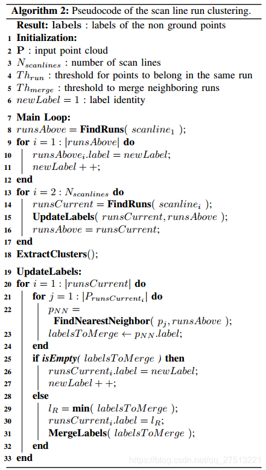
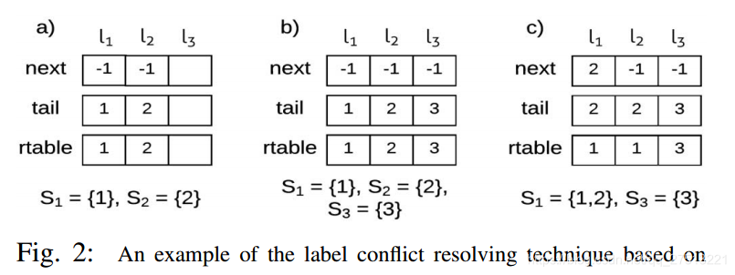
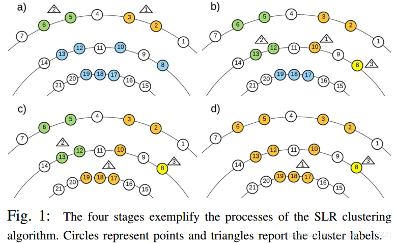
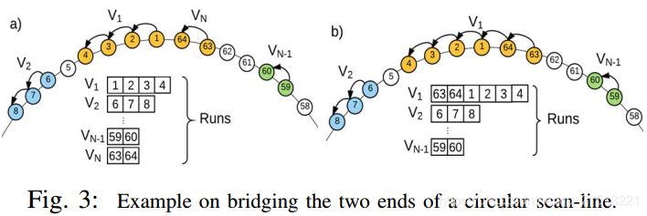
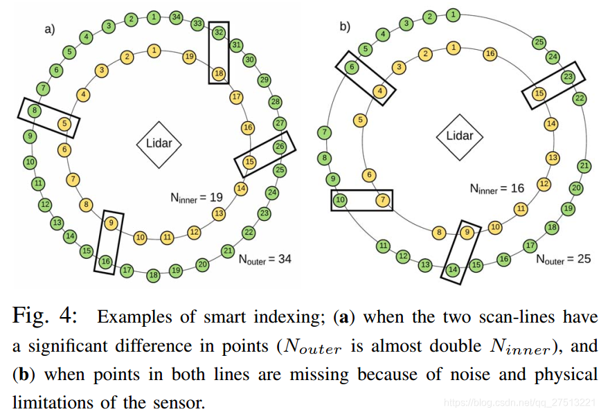
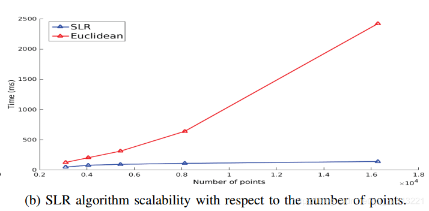
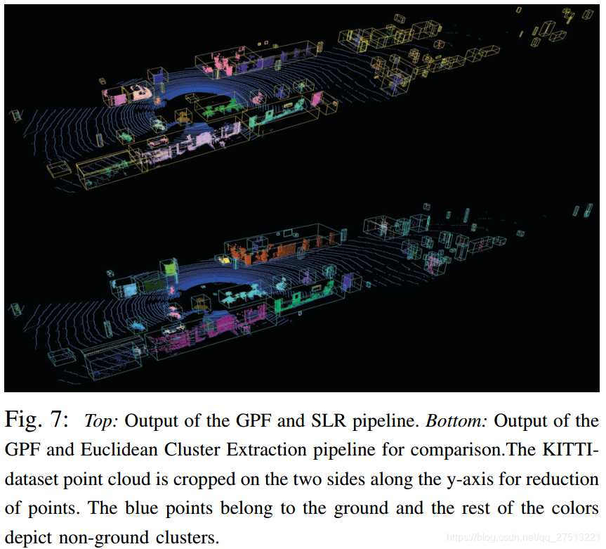
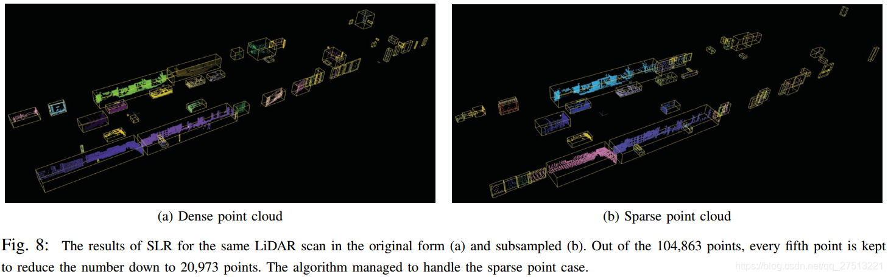
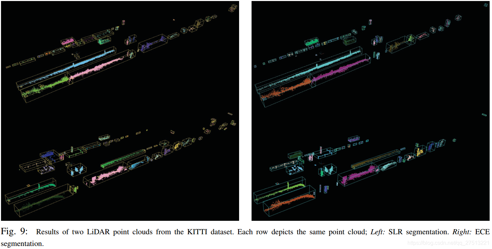

Scan Line Run 聚簇算法原理与实现
参考论文： Fast segmentation of 3D point clouds: A paradigm on LiDAR data for autonomous vehicle applications 代码地址
1．提取地面点(GPF算法)
2. 聚类(SLR算法)
下面的文章主要是Paper原文的翻译，为了补充理解添加个人注释
2.1 基本原理
不属于地面的剩余点需要形成要使用的簇，用在更高级别的后处理方案中。 我们的目标是为每个点 获取一个代表其集群标识的标签 ，同时使用简单的机制来确保过程的快速运行时间和低复杂性。伪算法如下

从伪代码中可以提取这几个关键量，为了后面的理解方便：
- ：输入点云
- : 扫描行数
- : 属于同一 的点的阈值
- : 合并相邻 的阈值
- :标签标识
在360°LiDAR传感器数据的情况下，3D点云的多层结构很类似于2D图像的行方向结构，主要差异在于每层中的元素的不均匀数量及其圆形形式。 所提出的解决方案将3D点视为图像的像素，并且从二进制图像调整两次运行的连通分量标记技术以产生实时3D聚类算法。
我们将从同一个LiDAR环产生的一层点称为 (扫描线）。 在每个扫描线中，其元素被组织在称为 (运行)的连续点的向量中。 中的元素共享相同的标签，并且是集群的主要构建块。

根据图2，在不失一般性的情况下，我们假设点云 从顶部扫描线开始以光栅逆时针方式遍历。形成第一扫描线的 并且每个扫描线都接收其自己的 ，该标签由其所有点元素继承。然后，第一条扫描线的 成为 ，用于将其标签传播到后续扫描线中的 。当新运行点与上一扫描线中最近邻点之间的距离小于 时，标签将传播到新 。当同一 中的多个点具有不同的可继承标签的最近邻居时，获胜标签是最小的。另一方面，当 中的任何点都找不到合适的最近邻居时，它会收到一个新的标签。以上是通过点云单次执行的，当完成此操作时，执行第二次传递以最终更新点标签和提取簇。

附图1的以下示例覆盖了所提出的算法的主要实例，其中白色和彩色圆圈分别代表地面和非地面点。蓝色圆圈是尚未访问过的非地面点。
- 步骤 a 中，第一扫描线初始化为两次运行（橙色和绿色），每次运行接收新标签（三角形内的1和2）。
- 步骤 b 演示了 的分配和两个标签的传播。特别是，最近的8的非地面邻居是2并且它们的距离大于 。在这种情况下， 为空，第8点代表新的集群。另一方面，最近的10的非地面邻居是3，其距离小于 ，这使得标签1传播到点10。类似地，点12和13都接近它们各自的邻居5和6，并基于非空 ，标签2分配给它们。
- 步骤 c 中考虑最终扫描线，其中存在一次运行。点17和19具有邻居10和12，它们属于不同的簇并且都适合于传播它们的标签。根据我们的算法逻辑，两个标签中的最小标签（即标签1）是继承的。
- 步骤 d 中，注意并标记两个标记1和2的合并，并通过下面讨论的标签等效解析技术进行处理。
2.2 实现细节
算法的概要是直截了当的，但为了有效实现，我们提出了（i）如何创建 ，（ii）如何寻找最近邻居，以及（iii）当合并两个或多个连接组件如何解决标签冲突的解决方案。

i）在扫描线的第一次访问时创建 作为索引的向量，并且保持关于哪些连续点足够接近被认为是扫描线内的单个块的信息。 考虑到扫描线的圆形形式， 可以桥接第一个和最后一个凹槽。 当检测到时，通过在第一次 的开始处附加扫描线末端的凹口来解决这种情况，如图3的示例所示。
ii）当输入点云以圆柱坐标表示，其中点 ，则可以将上面扫描线中最近邻居的索引视为简单地比较θ值。然而，在自动驾驶车辆应用中，聚类是更大的传感器和算法系统的一个小组件，并且出于兼容性原因，优选笛卡尔坐标系。在实现方面， 的解决方案是使用上面扫描线中的所有非接地点构建 结构，并使用它来查找每个最近邻居，从而产生可以进一步细化的次优但可行的解决方案。
假设扫描线中的点沿整个扫描线均匀分布，我们采用智能索引方法，克服了不同扫描线中元素数量不均匀的问题，并大大减少了查询最近的邻居的数量。假设每个扫描线具有 个点，并且每个点具有两个空位;一个全局 表示它在整个点云中的位置，一个本地 表示扫描线内的点。可以通过以下方式轻松地在扫描线 的凹槽之间切换：
给定具有局部索引 的扫描线 中的点索引，可以通过以下等式直接在上述扫描线 中的实际最近邻居的附近找到邻居 的局部索引：
和从公式3计算它的全局系数相同
放弃对最佳匹配的追求，考虑算法的开销提出解决方案
根据扫描线内部点的分布，索引可能不会指示最近的邻居，而是指示足够接近的点。在这种情况下，可能需要在其周围的多个点中搜索最近的邻居，但是该数量远小于考虑整个扫描线。在运行中，识别潜在邻居并搜索其周围环境以获得最佳匹配会导致大量开销，从而破坏算法的性能。考虑到这一点，所提出的解决方案是通过智能索引找到 的第一个和最后一个点的最近邻居，形成具有该范围内的所有非地面点的 结构，并使用它来搜索最近的邻居。

智能索引的两个可视化示例可以在图4中看到。在a）中，虽然两条扫描线中的点数完全不同，但是随机选择的点在外部具有局部凹陷8,16,26和32扫描线表示为内部扫描线中分别具有局部凹陷5,9,15和18的点的最近邻居。此外，在b）点的分布非常不均匀，但智能索引仍然成功地表明适当的邻居。这些情况对于前几条扫描线是常见的，因为它们的一些激光束由于吸收或非常高的距离而永远不会返回。在极少数情况下，连续扫描线之间的点数差别很大或者扫描线的很大一部分缺失，智能索引很可能会失败。在这些情况下，将整个扫描线视为潜在最近邻居的 解决方案仍然可以产生良好的结果。
iii）在[13]中引入了解决标签合并冲突的方法，其中提供了实施和深入理解的所有细节。下面简要介绍要点和简单示例。
当两个或更多不同的标记组件需要合并时，出现标签合并冲突。据He等人说。通过在同一组 中累积它们的标签 并利用具有三个一维阵列的复杂方法来捕获它们的层次结构和连接来给出解决方案。所有三个向量都具有在第一次通过点云期间创建的总标签数量的大小。第一个向量 的每个条目在其 中存储下一个 ，并且 中最后一个 的条目为-1。接下来，向量 将索引存储到 的最后一个。最后一个向量 具有报告每个l的最终标签在任何给定时刻将是什么的辅助作用。在第一次通过结束时， 用作最终标签的查找表。
让我们从三个向量的角度来看待图2的例子。在第一步a）中，创建两个标签（1和2）并填充 ， 条目。两个集合中的每一个只有一个元素，因此下一个条目都是-1，尾部条目表示S中最后一个元素的索引，对于两个集合 分别是1和2，并且 表示最终的代表性标签。接下来，在b）中创建 并且向量填充与之前相同的向量。最后， 和 合并，这意味着 的第一个条目将指向 中下一个元素的索引， 中两个元素的尾部是相同的，并指向该集合的最后一个元素的索引，并更新 以正确描绘最终标签。
2.3. 实验结果

得到的簇可以在图7中的黄色边界框内看到。 算法利用了点云的结构，并且比以不规则方式遍历点云的算法执行得快得多。 图5b中所示的图表示随着点数的增加，时间的线性增加。 相比之下，欧几里德群集提取 算法随着点数的增加呈指数级增长。 需要在整个数据集中搜索邻居的聚类算法，其性能基于云的总点数。 另一方面，对 的搜索受其运行大小的限制，并且仅在一条扫描线上考虑邻居以实现更好的性能。

如图8所示，点云中的点密度的降低影响 分割，其中过度分割的情况在8b中呈现。 该算法对于传感器附近的物体表现令人满意，因为相邻车辆已被正确分割。 在图9中提供了用于 和 之间的比较的更多结果，其中注意到两种算法的类似行为。 由于阈值参数和3D点访问顺序的差异，存在小的变化。

